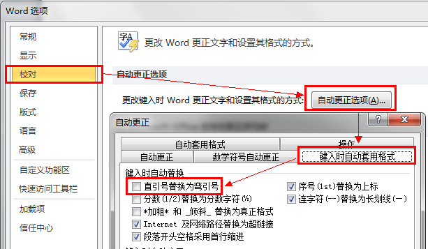
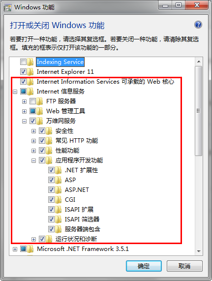
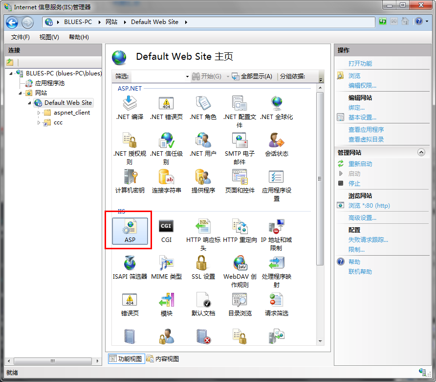
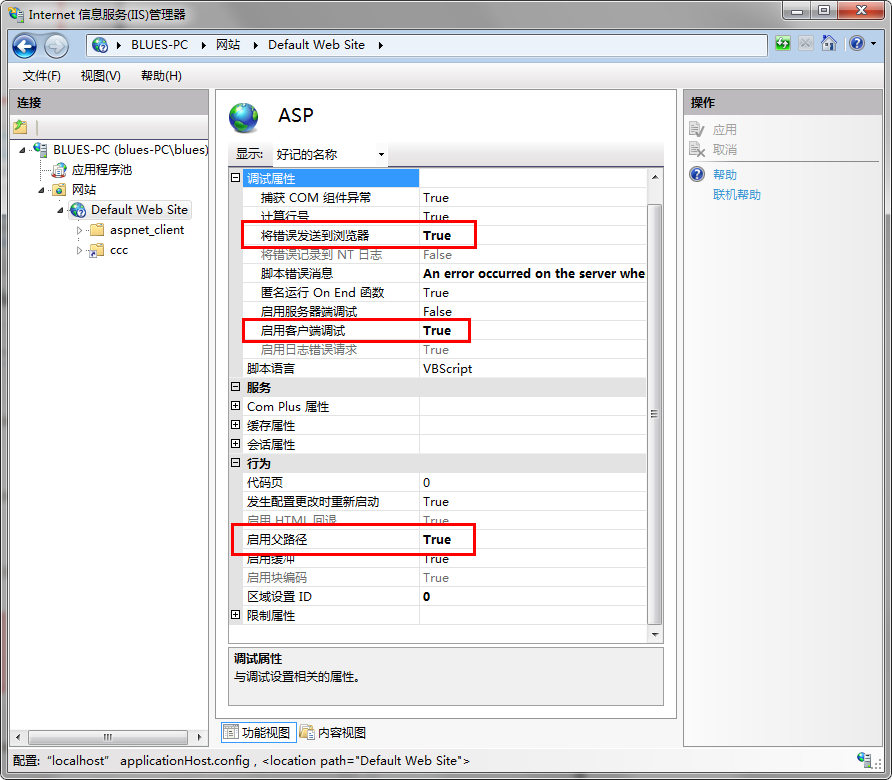
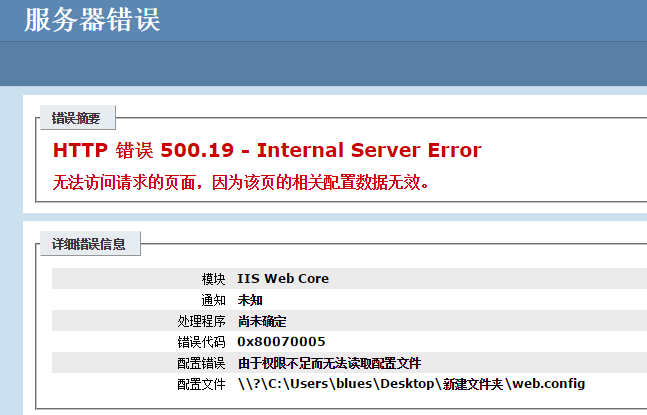
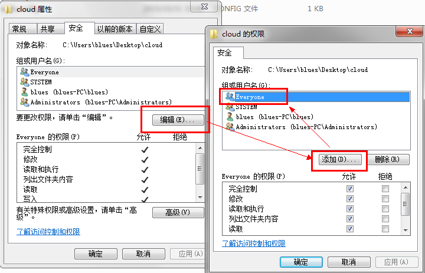
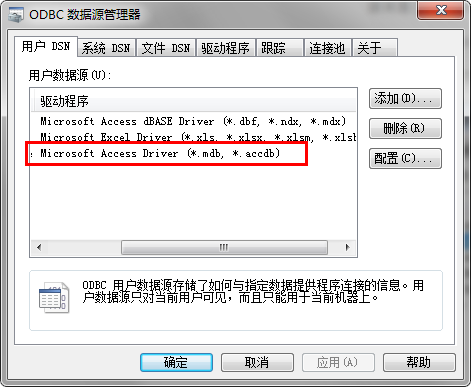

C:\Program Files\Adobe\Adobe Photoshop CS6 (64 Bit)\Locales\zh_CN\Support Files下面重命名
tw10428.dat，使系统找不到该文件即可切换到英文版，如需恢复中文版，则将文件重命名回来。
win7 将Colors.xml（在 插件和小工具 目录下）替换以下路径同名文件：
C:\Users\bluesjiang\AppData\Roaming\Adobe\Dreamweaver CS6\zh_CN\Configuration C:\Program Files (x86)\Adobe\Adobe Dreamweaver CS6\configuration\CodeColoring
快捷键重设
Ctrl+E 执行 Expand Abbreviation先修改setup.xml，再安装！
插件：CorelDRAW超级伴侣
插件：QRcode_0731 矢量二维码制作插件
WIN7 64位，安装CDR X7 SP2时替换了welcome文件后出现脚本错误，这时找到welcome.htm文件右键-属性，在最下面，安全那里点击“解除锁定”，再应用，确定，就可以正常更新了。
“文件”菜单 » 选项 » 校对 » 自动更正选项 » 键入时自动套用格式 » 勾掉“直引号替换为弯引号”
C:\Documents and Settings\Administrator\Application Data\Microsoft\Word (Excel)目录下找到文档名为
xxxxx.asd (隐藏文件) / xxxx.asp (Excel的临时文档)
C:\Program Files (x86)\Google\Chrome\Application\chrome.exe" --allow-file-access-from-files
由于设置google.com.hk为默认搜索时，会跳转google.com/login/login.cgi的错误Win+R：
%LOCALAPPDATA%\Google\Chrome\User Data\Default打开后，用记事本编辑该文件夹下的文件 Preferences （注意：这个文件是没有后缀名的），找到字符串
last_known_google_url 和 last_prompted_google_url，将其后面的字符串改成自己想要的 Google 搜索域名，如：
"last_known_google_url": "https://www.google.com/", "last_prompted_google_url": "https://www.google.com/",
通常情况下，从google网站下载到的安装文件，不能完成安装，一直是僵死的联网状态，所以需要在IE设置中打开局域网代理，把端口改为127.0.0.1:8087，即走goAgent的翻墙通道，则可以完成安装，包括后续的浏览器更新，但有一点极其重要，在完成Chrome的安装或更新后，请立即关掉IE的局域网代理，因为这个时候Host是失效的，如果打开Photoshop或其他破解软件，因为能联网验证了，所以激活自动失效。
同步帐号：bluesjiang@live.cn 19820525
同步密钥：h-jtzrk-bmuxn-nwvqt-en3xi-9h43e
uploader.batbluesjiang|iambluesjiang提示输入GMail帐号密码：
blues.jiang@gmail.com / 159753sa
proxy.user.ini
[gae] appid = bluesjiang|iambluesjiang|iambluesdog|imbluesjiang|imbluesdog|amibluesjiang|amibluesdog|isbluesdog [pac] ip = 127.0.0.1 [gae] validate = 1 [autorange] threads = 8 maxsize = 262144 waitsize = 524288 bufsize = 32768
尽量不要去改proxy.ini，goAgent为用户提供proxy.user.ini来保存自定义配置。如果没有该文件，就创建一个。
goAgent工作原理：每次从proxy.ini中提取部分ip来连接，多线程下载网页，如果当前ip不能用了会依次再取其他ip。
打开 goagent 客户端界面，看到一片黄色和红色的日志输出，goodip数量为0，表示当前所有ip都被墙了。
此时，打开proxy.user.ini，找到[iplist]，将其替换为可用的GAE的ip。
注意每个ip之间，用符号“|”隔开，替换完后，右击系统托盘上的goagent图标，选择重新载入即可。
详见《张生那点事》.doc
3083 激活码：
----- BEGIN LICENSE ----- Andrew Weber Single User License EA7E-855605 813A03DD 5E4AD9E6 6C0EEB94 BC99798F 942194A6 02396E98 E62C9979 4BB979FE 91424C9D A45400BF F6747D88 2FB88078 90F5CC94 1CDC92DC 8457107A F151657B 1D22E383 A997F016 42397640 33F41CFC E1D0AE85 A0BBD039 0E9C8D55 E1B89D5D 5CDB7036 E56DE1C0 EFCC0840 650CD3A6 B98FC99C 8FAC73EE D2B95564 DF450523 ------ END LICENSE ------下载页面
install-ietester-v0.5.2.exe + install-debugbar-v7.3.2.exemseinstall.exe
Thunder7.1.8.2300 JayXon.rar解决方法：
打开chrome的设置，显示高级设置 —— 隐私设置 下七个选项中的第四个选项（启用针对网上诱骗和恶意软件的防护功能）把勾去掉，打开chrome的工具 —— 扩展程序，然后打开idm安装目录，找到文件 IDMGCExt.crx，拖动文件到 chrome的扩展程序界面 中即安装。
移动硬盘 » 程序 »IDMan614b5-CN.exer *IDM623 会失效winamp_5.6.3.exe注意要完整安装！



【将错误发送到浏览器】为【true】否则不会在浏览器中显示具体的程序错误
【启用父路径】为【true】否则会出现数据库无法连接

解决方法：创建一个everyone的账号，配置所有权限

仅win7 64位会发生此问题
解决方法：
如果ODBC数据源管理器中没有红色项，请先下载驱动 AccessDatabaseEngine_X64.exe
如果已安装，则修改页面中原来数据库引用语法
{Microsoft Access Driver (*.mdb)} 修改为 {Microsoft Access Driver (*.mdb, *.accdb)}
解决方法：出现以上错误，直接修改网站目录下web.config配置文件，找到
<files> <add value="index.aspx" /> </files>
这一句直接删除即可。
notepad %SystemRoot%\system32\drivers\etc\hosts如提示无法保存时，请到附件菜单中右键记事本 “以管理员身份运行” 即可。
-- 最全的屏蔽adobe激活 -- 127.0.0.1 3dns-3.adobe.com 127.0.0.1 3dns-2.adobe.com 127.0.0.1 activate.adobe.com 127.0.0.1 activate.wip3.adobe.com 127.0.0.1 activate-sea.adobe.com 127.0.0.1 activate-sjc0.adobe.com 127.0.0.1 adobe-dns.adobe.com 127.0.0.1 adobe-dns-2.adobe.com 127.0.0.1 adobe-dns-3.adobe.com 127.0.0.1 ereg.adobe.com 127.0.0.1 ereg.wip3.adobe.com 127.0.0.1 hlrcv.stage.adobe.com 127.0.0.1 lm.licenses.adobe.com 127.0.0.1 lmlicenses.wip4.adobe.com 127.0.0.1 na1r.services.adobe.com 127.0.0.1 na2m-pr.licenses.adobe.com 127.0.0.1 practivate.adobe.com 127.0.0.1 wip.adobe.com 127.0.0.1 wip3.adobe.com 127.0.0.1 wwis-dubc1-vip60.adobe.com
修改完HOST后CMD:
ipconfig /flushdns
| #ID | 名称 | 主DNS | 副DNS | 国籍 | 描述 |
|---|---|---|---|---|---|
| 114 | 114.114.114.114 | 114.114.115.115 | CN | ||
| AliDNS | 223.5.5.5 | 223.6.6.6 | CN | 阿里 | |
| 百度DNS | 180.76.76.76 | CN | |||
| DNSPOD+ | 119.29.29.29 | 182.254.116.116 | CN | ||
| 中科大DNS | 202.38.93.153 | 202.141.162.123 | CN | 据说无污染 | |
| OneDNS | 114.215.126.16 | 112.124.47.27 | CN | 官方称小众DNS,没怎么用过,稳定性不敢保证 | |
| OpenDNS | 208.67.222.222 | 208.67.220.220 | US | 可以当备胎 | |
| V2EX DNS | 178.79.131.110 | 199.91.73.222 | US/UK | 无污染,但是在国外,有些慢 | |
| UltraDNS | 156.154.70.1 | 156.154.71.1 | US | 解析的挺准确,Google域名解析到日本,我挺喜欢 | |
| Norton ConnectSafe | 199.85.126.10 | 199.85.127.10 | US | 还好,主打安全 | |
| Hurricane Electric | 74.82.42.42 | US | 强裂推荐,服务器在国外,速度还挺快 | ||
| 台湾中华电信 | 168.95.192.1 | 168.95.1.1 | TW | 稍微慢点 | |
| 香港宽频 | 203.80.96.10 | HK | 不是很稳定,但解析的谷歌为香港,这点比解析到美国快 | ||
| 和记环球电讯 | 202.45.84.58 | HK | 不是很稳定,谷歌居然解析到了台湾 | ||
| Pacific SuperNet | 202.14.67.4 | 202.14.67.14 | HK | 还可以 | |
| 香港 | 205.252.144.228 | 202.181.224.2 | |||
| 澳门 | 202.175.3.8 | 202.175.3.3 | |||
| dns.sspanda.com | 182.254.158.191 | 120.27.30.176 | CN | 站长非常有奉献精神,纯净DNS,个人搭建,稳定性有待检验 | |
| Google DNS | 8.8.8.8 | 4.4.4.4 | US | 由于墙的存在和在国外等因素,国内使用不是很稳定,时间很长,但是经过测试,使用TCP解析的话没有污染,效果挺好,可以作为本地缓存的上游. | |
| 中国互联网络信息中心 | 1.2.4.8 | 210.2.4.8 | CN | 解析国内域名还好,国外的跟前面介绍的没法比,而且是中国互联网信息中心出品,总感觉,呵呵 | |
| Verisign DNS | 64.6.64.6 | 64.6.65.6 | US | ||
| DNS.WATCH DNS | 84.200.69.80 | 84.200.70.40 | EU | ||
| 绿色团队 DNS | 81.218.119.11 | 209.88.198.133 | EU | ||
| Safe DNS | 195.46.39.40 | 195.46.39.39 | RU | ||
| OpenNIC DNS | 50.116.23.211 | 50.116.40.226 | US | ||
| puntCAT DNS | 109.69.8.51 | EU | |||
| Yandex DNS | 77.88.8.8 | 77.88.8.1 | RU | ||
| Alternate DNS | 198.101.242.72 | 23.253.163.53 | US | ||
| Free DNS | 37.235.1.174 | 37.235.1.177 | EU | ||
| Dyn DNS | 216.146.35.35 | 216.146.36.36 | US | ||
| OpenerDNS | 42.120.21.30 | CN | 阿里云，无添加剂 |